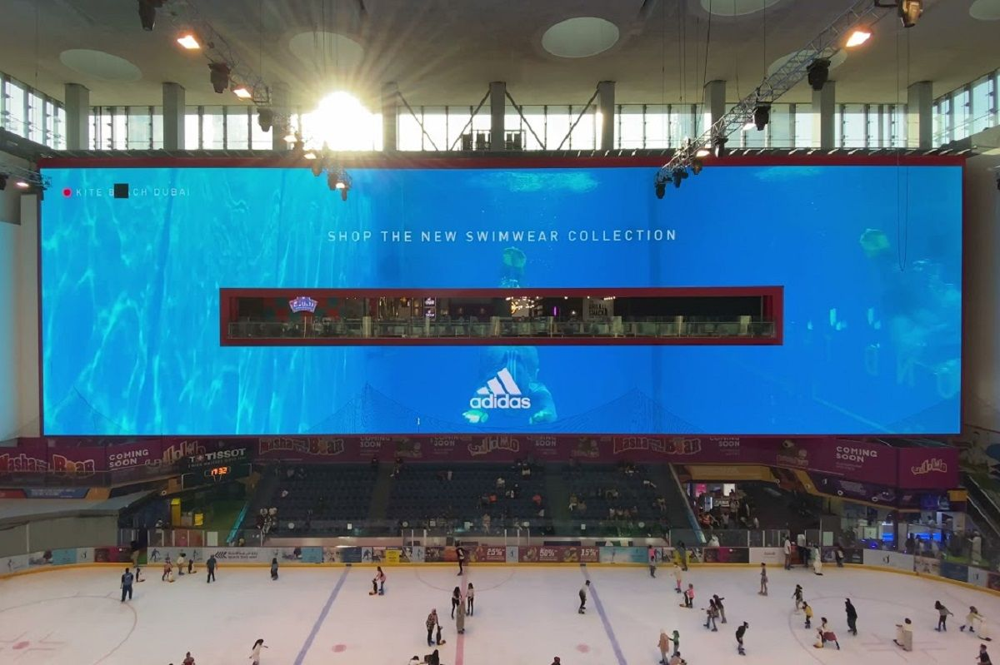
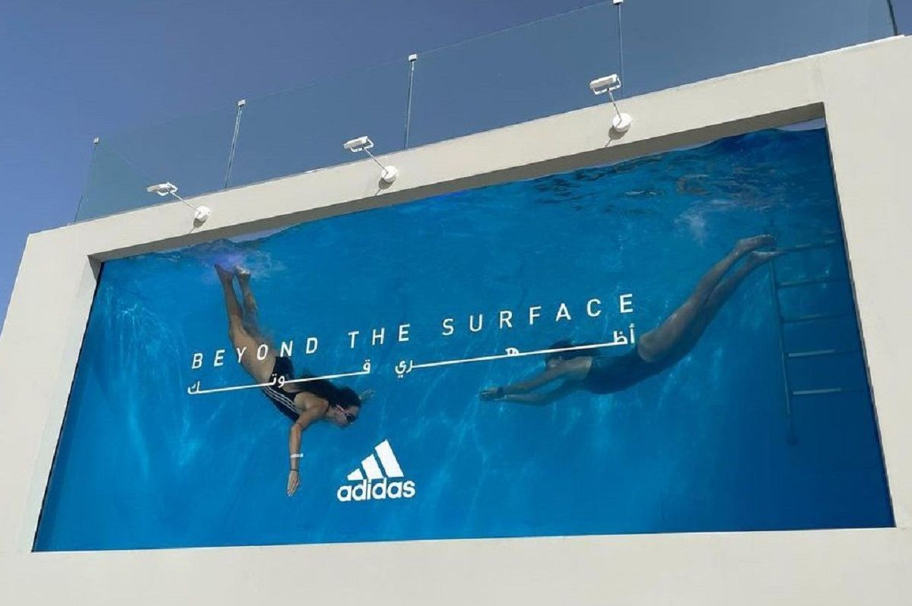
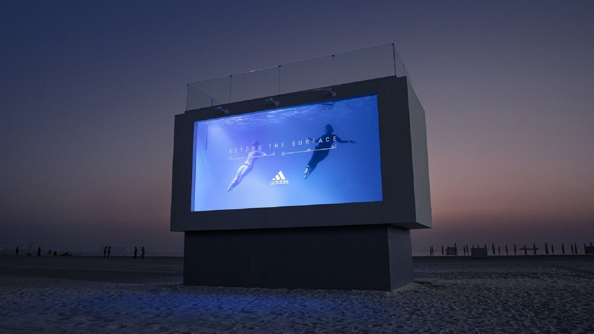

案例发生了什么
adidas 在迪拜海滩搭建了一块装满水、可供真实游泳的透明“液体广告牌”。它没有把模特照片印在画面上，而是邀请不同身形、背景和游泳经验的女性进入水中，成为广告内容。Jack Morton 项目页显示，现场影像还被传到迪拜购物中心、靠近 adidas 旗舰店的大屏，让一处体验同时变成城市级户外传播。广告牌、泳池与参与者三者被合并成同一个媒介。
真实执行素材
以下图片来自权利方、球队、品牌、制作方或奖项原档；按执行链完整度灵活收录，不限制固定张数，逐图保留主源链接。




案例启示
案例启示
关键动作
- 把标准户外牌改造成透明泳池，使“游进去”成为一句话就能理解的参与动作。
- 用普通女性的真实身体替代固定模特，让包容主张由参与者亲自呈现。
- 把现场画面同步到商业中心大屏，将小规模体验放大为公共空间内容。
传播与商业机制
媒介可进入
观众不是站在广告牌外拍照，而是直接进入广告画面。
参与者做主视觉
品牌让真实用户承担内容生产与价值证明。
现场放大
体验点负责真实发生，城市大屏负责扩大观看规模。
可复用的方法把品牌主张写进媒介结构：如果主张是“每个人都能参与”，就让广告位本身真正允许不同人进入。
适用条件与风险
- 水体结构、承重、救生、隐私授权与实时播出都需要高标准安全和法律流程。
- 制作方项目页披露的是传播案例信息，不能据此推导泳装销量或长期品牌提升。
资料与来源
官方资料与原始来源
Jack Morton Worldwide2021 · adidas Liquid Billboard打开原始来源 ↗
来源备注现场结构、参与方式和大屏放大路径均来自制作方项目页；效果数字不作无来源扩写。